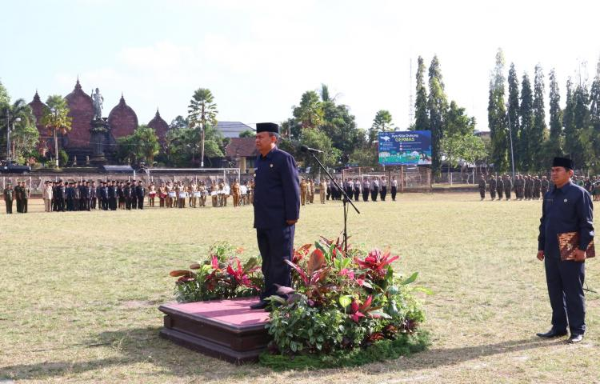
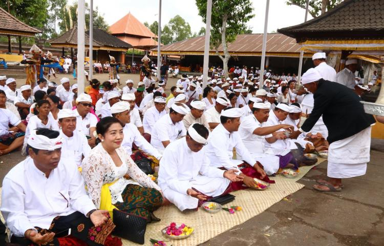

Information

Bupati Bangli Sebagai Inspektur Upacara Dalam Peringatan Hari Sumpah Pemuda Ke-90 Tahun 2018 -Dalam upaya membangun kesadaran kebangsaan Indonesia sekaligus komitmen menjaga persatuan dan kesatuan Bangsa yang dijadikan tauladan untuk membangun Bangsa Satukan Indonesia, Senin (29/10) di gelar Upacara Peringatan Hari Sumpah Pemuda ke-90 tahun 2018. Acara yang di pusatkan di lapangan Kapten Mudita Bangli diikuti oleh Forkompimda, Perwakilan Dari TNI, POLRI, ASN, Sekolah dan Instansi Terkait, sebagai Inspektur upacara Bupati Bangli. Sambutan Menteri Pemuda dan Olah raga Republik Indonesia Imam Nahrawi menyampaikan kita semua berhutang budi pada para tokoh pemuda tahun 1928 yang telah mendeklarasikan sumpah pemuda sehingga menjadi pelopor pemuda untuk membangun kesadaran kebangsaan Indonesia sekaligus komitmen menjaga persatuan dan kesatuan negeri ini.

Kabupaten Bangli Ngaturang Bakti Penganyar Pujawali Dan Betara Turun Kabeh Di Pura Dalem Balingkang Di Pimpin Langsung Oleh Bupati Bangli–Sebagai Wujud srada Bakti Kepada Ida Batara yang berstana di Pura Dalem Balingkang, Jumat (2/11) Pemerintah Kabupaten Bangli dan seluruh Jajaran ASN di Kabupaten Bangli ngaturang Bakti Penganyar di Pura Dalem Balingkang. Acara yang di gelar di jeroan Pura di hadiri oleh Bupati Bangli, Wakil Bupati Bangli, Sekda Kabupaten Bangli, PHDI Kabupaten Bangli, Perwakilan Kantor Kementerian Agama Kabupaten Bangli, Kepala BPD Bali Cabang Bangli, Instansi Terkait, Pimpinan OPD dan Pegawai di lingkungan Pemerintah Kabupaten Bangli
Destinasi
"Objek Wisata Spiritual " Pura Tirta Sudamala "
Pura Tirta Sudamala terletak di sebuah desa, tepatnya di Br. Sedit, Kelurahan Bebalang, Kecamatan Bangli, Kabupaten Bangli. Br Sedit adalah sebuah populasi masyaraka ..
"Berkelana Dan Menikmati Eksotisme Gunung Batur "
Seperti halnya Gunung Agung yang terletak di Karangasem, potensi dan keindahan Gunung Batur tak kalah menariknya. Bahkan, keeksotisan dan keindahan Gunung Batur membuat gunung ini merupakan salah satu and ...
"Air Terjun Tibumana "
Ada destinasi wisata baru berupa air terjun yang belum banyak terekspos yang bisa menjadi alternatif saat berlibur. Namanya air terjun Tibumana. Sebuah objek wisata yang bertempat di Banja ...
Dana Pemerintah
SMS Pengaduan

News
"Tumpek Landep, Aset Kendaraan Pemkab Bangli Diupacrai Bersamaan"

"Sembayang Bersama di Dua Pura"